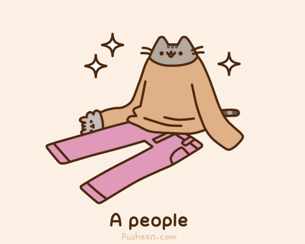
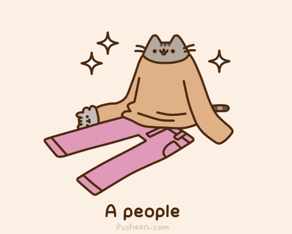
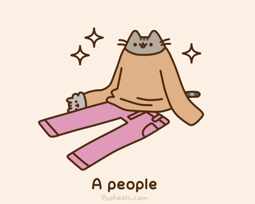
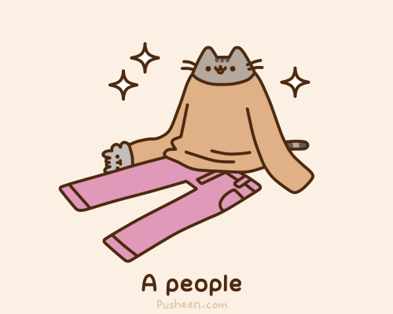

A durp is formed when a flower blooms. Keep that in mind (it's not when a rock cracks open, or from a comet, or any other ideas you might have). It was an idea inspired by a shape template(drew a circle, and added a line and two dots). One rule about them is that they should have no points(sharp edges). Durps can come in different costumes, like pumpkins, cats with rounded ears, birds, pizzas, kings, princesses, any job worker, a dancer, or anything eles(with rounded edges)!
Pusheen is a lazy, fat, female cat that eats and sleeps in her free time. She is based off a real cat, named pusheen! the name "pusheen" means "kitten" in Irish. By the way, she hates weight lifting(or running, obeying orders, and not getting any candy), low fat food(or fat free food),and getting up early. she enjoys the opsits of these things.